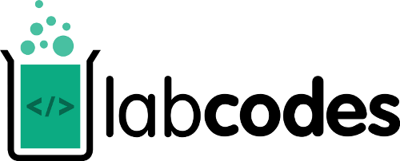

Features
Comandos e workflow
# encoding: utf8
from django.db import models, migrations
class Migration(migrations.Migration):
dependencies = []
operations = [
migrations.CreateModel(
fields=[(u'id', models.AutoField(
verbose_name=u'ID', serialize=False,
auto_created=True, primary_key=True
),), ('attr', models.CharField(max_length=100),)],
bases=(models.Model,),
options = {},
name = 'MyModel',
),
]
renato@labcodes.com.br
@_renatooliveira
github.com/renatooliveira
labcodes.com.br
/
#